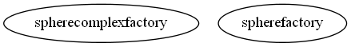

Master index
Index for manopt\manifolds\sphere
Dependency Graph for manopt\manifolds\sphere

Generated on Tue 24-Jun-2014 22:57:39 by
m2html
© 2005
 Master index
Master index Master index
Master index